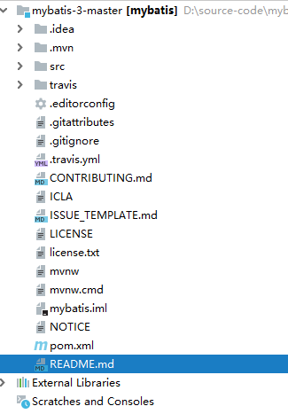

|
源码git地址：https://github.com/mybatis/mybatis-3 目标结构：
 mybatis是数据持久化解决方案将用户从JDBC访问中解放出来，用户只需要定义需要操作的SQL语句，无需关注底层JDBC操作，就可以以面向对象的方式来进行持久层操作，底层数据库的连接获取，数据库访问的实现，事务控制等都无须用户关心。本章学习mybatis中的常见对象SqlSessionFactory和SqlSession
一、SqlSessionFactory SqlSessionFactory是mybatis的关键对象，它是单个数据库映射关系经过编译后的内存镜像，SqlSessionFactory可以通过SqlSessionFactoryBuild对象类获取，而SqlSessionFactoryBuild则可以从xml配置文件或一个预先定制的Configuration的实例构建出SqlSessionFactory的实例，每一个mybatis的应用程序都以一个SqlSessionFactory对象的实例为核心，sqlSessionFactory也是线程安全的，SqlSessionFactory一旦被创建，在应用执行期间都存在，不宜重复创建多次，推荐使用单例模式，SqlSessionFactory是创建SqlSession的工厂。 SqlSessionFactory：接口源码 在Spring中构建SqlSessionFactory： 通过@Bean配置一个DataSource类，构造一个SqlSessionFactoryBean实例通过setDataSource（）将DataSource绑定，通过getObject（）方法创建SqlSessionFactory对象 二、SqlSession SqlSession也是mybatis中的重要对象，是持久化操作的独享。类似于jdbc中的Connection，它是应用程序与持久层之间执行互操作的一个单线程对象，也是Mybatis执行持久化操作的关键对象，SqlSession对象完全包含以数据库为背景的所执行SQL操作方法。底层封装了JDBC连接，可以用SqlSession的实例对来执行被映射的SQL语句，每个线程有他自己的SqlSession实例，SqlSession的实例不能被共享，SqlSession也不是线程安全的，绝对不能将SqlSession实例的引用放在任何类型的管理范围中，使用完SqlSession之后关闭Session很重要，放在finally块来关闭它。 |